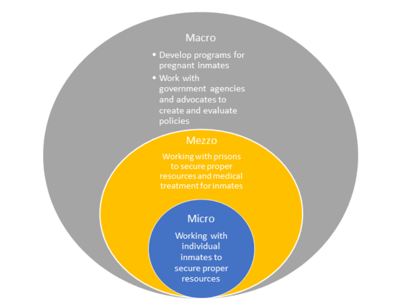

Advocacy Efforts
To secure the proper treatment and resources given to incarcerated women in South Carolina, we would work with different prisons throughout South Carolina to secure accurate data. In South Carolina, the Department of Corrections has twenty-one institutions that house incarcerated women. We would gather research from different prisons and give surveys to incarcerated females that are pregnant and not pregnant. The surveys will be issued to the social workers in the different facilities, and the social workers will ensure that all surveys are completed accurately. Collecting data from the females will identify the core issues so that advocacy efforts will reflect what is truly needed for the incarcerated females. After collecting data, we will collaborate as a team to highlight needs.
In the case of SC bill 3967 discusses:
- Restraints on pregnant females
- Following nutritional guidelines for pregnant women to ensure they are receiving enough food
- Placement for pregnant females or female that have given birth within 30 days
- Prohibiting females to sleep on elevated beds
- Ensuring that females are provided with sufficient menstrual products
- Limits body searched for females by male officers with no clothing or limited clothing
- Visitation for minor dependents once a week to their mother
Listed above outlines the core issues within South Carolina facilities that house female inmates, which is why SC Bill 3967 was created, and where the questions from the survey will stem. Micro, Mezzo, and Macro policy advocacy efforts will all be geared towards the outcome of the data collected from the surveys. Listed below is what purposes each level will be responsible for potential advocacy efforts.
Micro
Purpose: Connecting and working with individual female inmates to secure proper resources and receive appropriate medical treatment, while incarcerated.
Implementation: The Micro Social Worker will work individually with the inmates. The social worker will be responsible for ensuring that all females receive proper medical treatment and resources. Suppose the social worker is aware that a female is not receiving proper treatment or resources. In that case, he/she is responsible for securing resources and advocating on behalf of the inmates.
This may be making sure more that, but are not limited to:
- Ordering supplies for the inmates
- Arranging medical appointments
- conducting one on one sessions for females inmates for counseling
- reporting to the appropriate supervisor about issues on behalf of the inmates
- collecting data on issues that may arise with inmates to report
The Micro Social Workers are vital to advocating efforts because they work directly with the inmates and know what the issues are when they arise. Prison Social Workers need to create a healthy relationship with the inmates, so the Social Worker can effectively complete their work and ensure proper treatment and resources are secured. The Micro Social Worker will be responsible for issuing the surveys and ensuring that it is accurately completed and passing it to the Mezzo Social Worker.
Mezzo
Purpose: To advocate and serve female inmates within the public, while working with the prison to secure proper resources and medical treatment for female inmates.
Implementation: The Mezzo Social Workers will work with the micro and mezzo social workers to ensure that resources and treatment are secure. The Mezzo Social Worker will connect the resources and treatment within the community. This may be making certain more that, but are not limited to:
- Connecting resources in the community to the facilities
- Ensuring funding is made available for resources
- Creating pieces of training for employees and social workers within the prisons to secure proper treatment to inmates
- Creating group sessions with inmates to ensure resource and treatment is secure
- Organizing and create policies
The Mezzo Social Worker will be responsible for linking and securing resources to the facilities, workers, inmates, and the community. The Mezzo Social Worker will collect all surveys, pinpoint core issues with the South Carolina prison system, and pass the Macro Social Worker information.
Macro
Purpose: Research and develop programs for pregnant inmates to secure proper resources and medical treatment for female inmates. The macro-level social worker will work with government agencies and advocates to create appropriate policies for incarcerated females.
Implementation: The Macro Social Workers will work in and with the government agencies to develop policies on behalf of women inmates in South Carolina. These Social Workers will present the information gathered from surveys and policies that will need to be implemented on behalf of the inmates to ensure proper treatment and resources are available. This may be making sure more that, but are not limited to:
- Reviewing data collected
- Create policies and implement
- Ensure funding is made available to the prisons for proper treatment and resources
- Gathering advocates to voice their information to create policies
- Working with the Micro and Mezzo social workers
- Creating services that will be beneficial to South Carolina incarcerated females
The macro-level social workers will be responsible for policies and laws created and passed to ensure positive change for the incarcerated females. They will create and adjust policies to ensure that core issues are addressed. After each level of an advocacy effort has been implemented, efforts will be re-evaluated to ensure all resources and treatments are arranged adequately for all institutions that house females. If advocacy efforts are successful, policies implemented will be secured for all South Carolina females for years to come.
